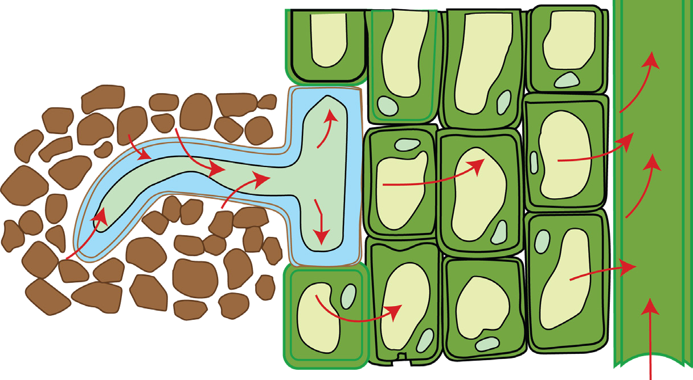
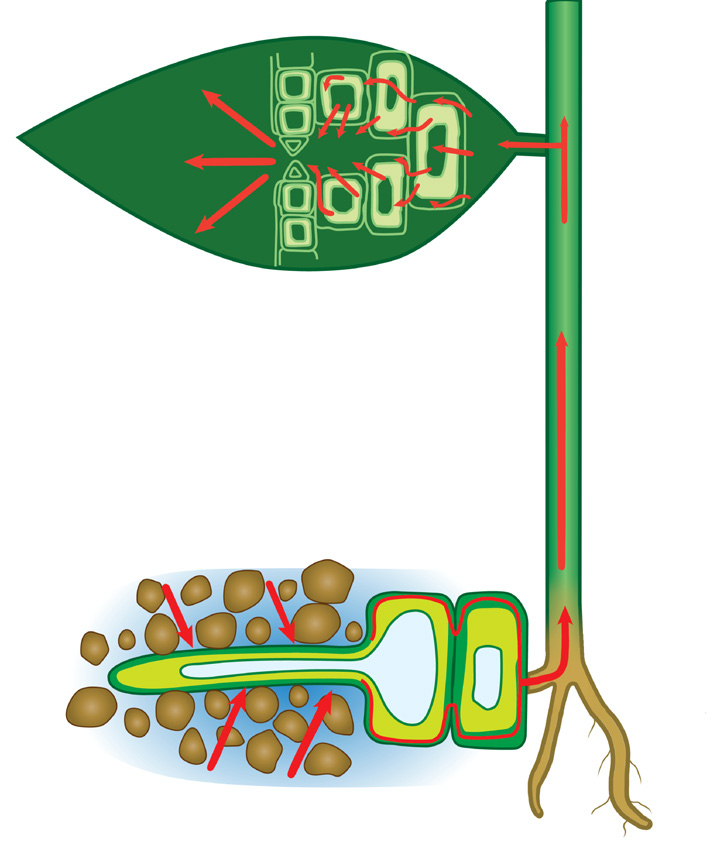
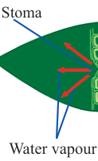

86
Student’s Book - Form Two
Biology for Secondary Schools

Xylem vessel
Ascent of water in root xylem
Increasing concentration
Direction of water
Cell vacuole
Soil particles
Cytoplasm
Endodermis Pericycle
Epidermis
Cortex
Figure 4.13: Movement of water from a root hair to the xylem
Once in the xylem, water and the mineral salts dissolved in it move up the xylem vessel by transpiration pull, capillarity, and root pressure.
Transpiration pull
Transpiration occurs when water evaporates from the plant through
the stomata in the leaves. As water is
lost, the mesophyll cells draw water from the xylem in the leaf which in turn draws water from the xylem in
the stem. This creates a tension called
transpiration pull, which draws water
from the roots. Thus, transpiration pull
is the biological process by which plants
draw water in the upward direction as a result of transpiration. This results in a continuous column of water through
the xylem from the roots to the stem and
leaves. This column of water is called the transpiration stream (Figure 4.14).

Stoma
Water vapour
Root hair
Direction of water

Figure 4.14: Transpiration stream
Capillarity
Capillarity is the ability of water to flow through narrow tubes. Xylem vessels are structurally adapted for capillarity because they are long and
08/04/2026 10:18:25